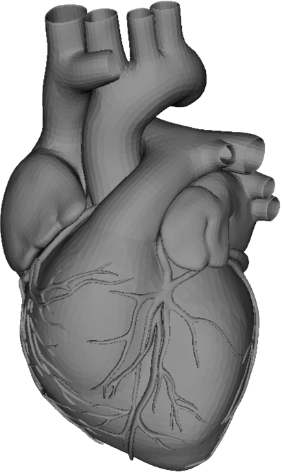
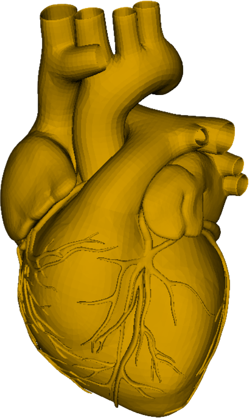
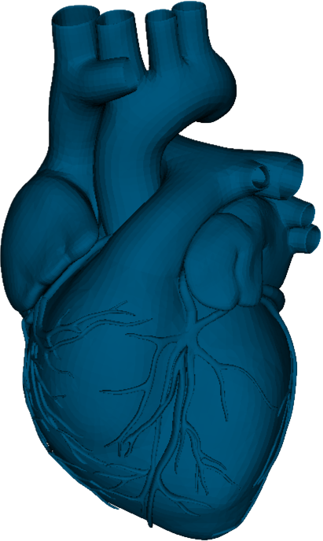
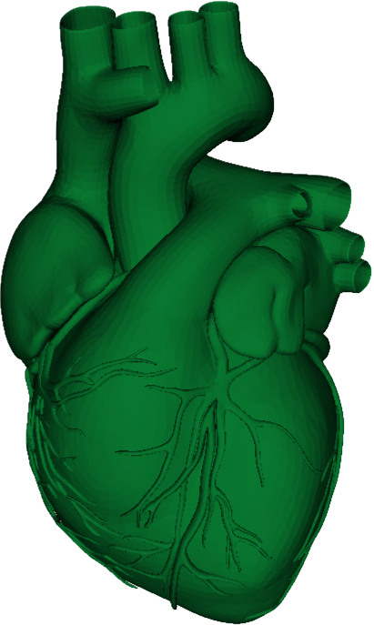
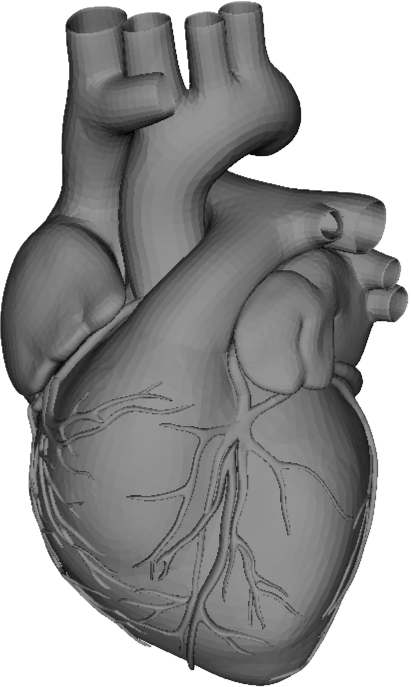
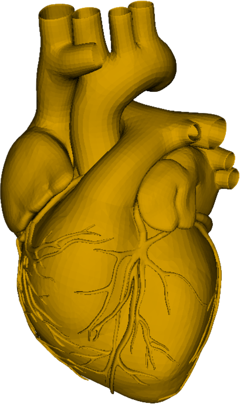
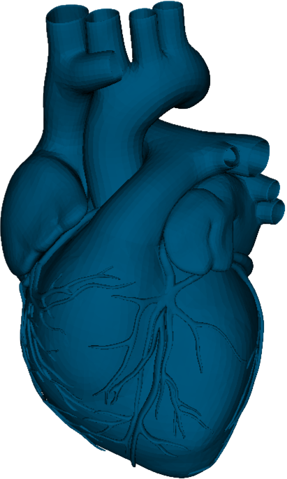
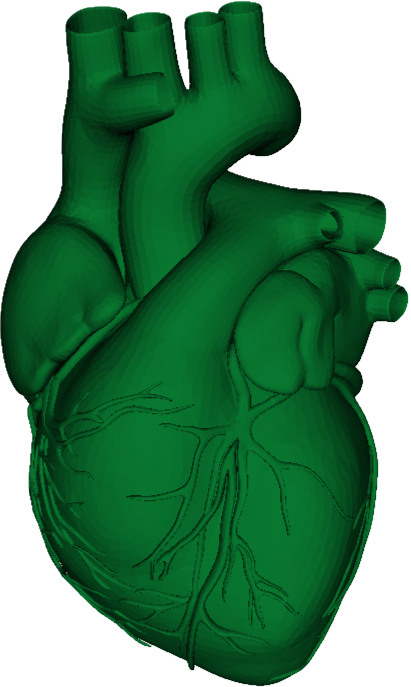

Choose a defect
Here you can select other defects to view.
| Defect | Preview |
|---|---|
| Atrial Septal Defect |  |
| Ventricular Septal Defect |  |
| Atrioventricular Septal Defect |  |
| Patent Ductus Arteriosis |  |
| Tetrology of Fallot |  |
Support your favourites as the little_hearts team takes part in the BMO run in April as part of BCCH's team HeartAttack!


We hope to educate our users about heart anatomy and congenital heart disease with 3D visuals.
Visit us at the BC Children's Hospital's Heart Centre.
Here you can select other defects to view.
| Defect | Preview |
|---|---|
| Atrial Septal Defect |  |
| Ventricular Septal Defect |  |
| Atrioventricular Septal Defect | |
| Patent Ductus Arteriosis |  |
| Tetrology of Fallot |  |
Director of Research
As an academic pediatric cardiologist, I am interested in optimizing outcomes for all children with cardiovascular disease.
Division Head and Medical Director
As a pediatric electrophysiologist, my research focuses on the rhythm of the heart.
Nurse Clinician
As a Nurse Clinician, I do many things, but essentially I strive to ensure the care and comfort of my patients.
Research Associate
As a research associate, my main interests of research are physical fitness, physical activity and cardiovascular health in children and youth.

Application Developer
As an Engineering Physics student, I cherish bringing ideas to life through science and technology.